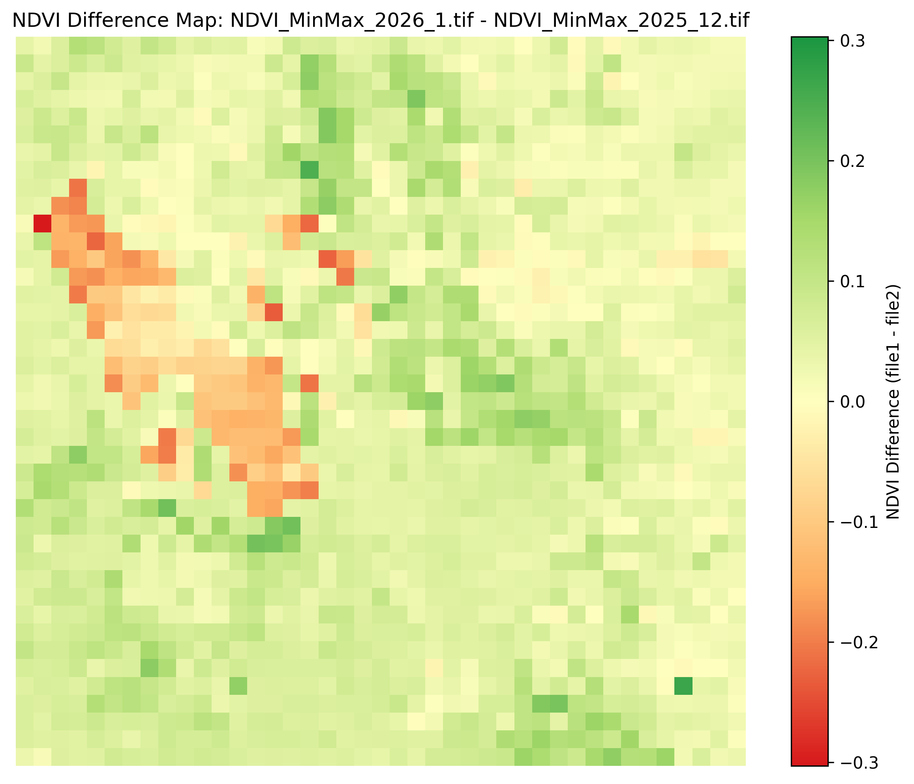
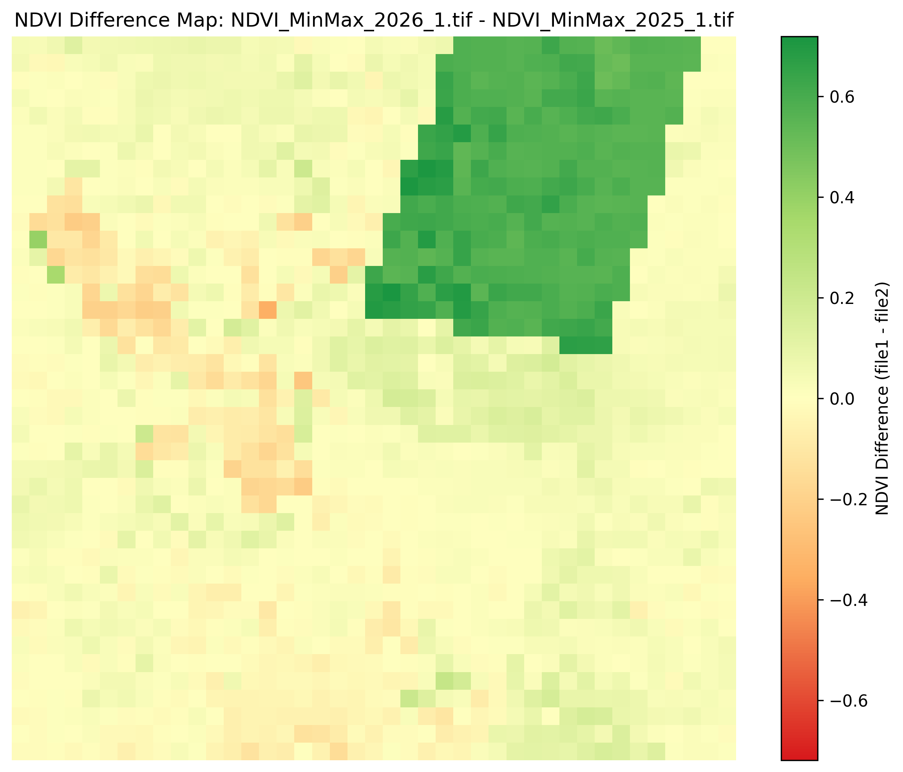

Monthly Report, January 2026
NDVI across the Wasatch Front increased noticeably in January 2026 compared to December 2025, with the most significant gains occurring in mountainous regions. Lower-elevation areas such as the Salt Lake Valley also showed increases, though they were less pronounced. Compared to January 2025, mountainous and more natural regions had higher NDVI, while the Salt Lake Valley showed a slight decrease.
1/26 NDVI Map:

The increase from December 2025 to January 2026 is likely driven by substantial snowmelt throughout the month. Snow cover can suppress NDVI by masking vegetation, so melting snow exposes underlying plant cover and leads to higher NDVI values even without any actual new plant growth. This effect is most visible in higher elevations where snow cover was slightly more persistent in December.
12/25–1/26 Difference Map:
1/25-1/26 Map:
Compared to January 2025, NDVI in January 2026 increased in mountainous and more natural regions but decreased slightly in the Salt Lake Valley and other lower-elevation areas. This pattern may reflect ongoing snow drought conditions in Utah. Reduced snowpack in valley regions can expose more bare soil or dry vegetation, leading to slightly lower NDVI values compared to the previous year, while snowmelt in higher elevations produces stronger increases.
Conclusion: January 2026 showed a clear NDVI increase from December 2025, particularly in mountainous areas, likely driven by snowmelt exposing vegetation. Compared to January 2025, mountainous regions increased in NDVI while valley regions decreased slightly, possibly reflecting regional snow drought and differing snowpack conditions.
Interpretive Notes
The January increase highlights how winter NDVI changes are often driven more by snow cover dynamics than by new vegetation growth. Snowmelt can rapidly increase NDVI in high-elevation areas, while snow drought conditions in valleys may reduce NDVI relative to previous years.
Works Cited
Landsat-8/9 imagery courtesy of the U.S. Geological Survey
NOAA National Centers for Environmental Information, Monthly Climate Reports and drought summaries.